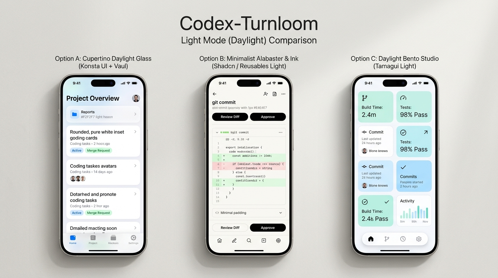
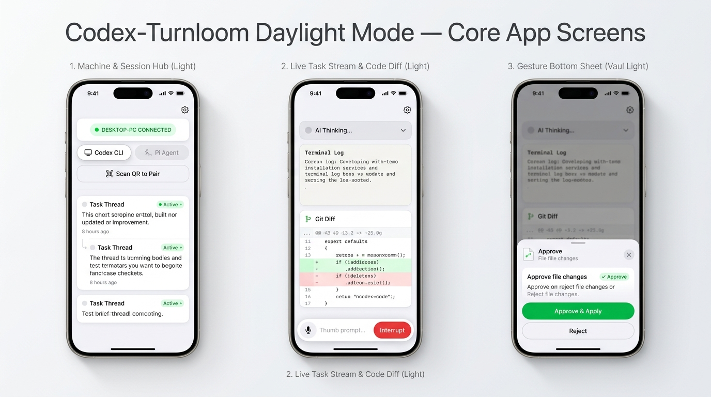

交付与实机测试报告 · V7
双线并行重构 + V6 返工（修截断 / 大标题重叠、MuMu 手机分辨率重跑、排队·插队·附件、48 张当前构建重截图）+ V7 离线演示（外网用户零联网也能逐页点、每个功能都有演示数据与反馈）。所有结论分「本机实测」与「工具限制未完成」，不把浏览器视口冒充真机、不把未验证写成通过。
1两个独立可安装 APK（本轮最终包）
两个包名互不相同，不覆盖你已安装的任何 APP。手机与电脑需同一局域网，服务地址 http://192.168.1.10:8787，访问码 684271。下面哈希是本机 Get-FileHash 对交付文件的实测值。
E9A78756…B8ED3DF7864E…C9aapt dump badging 实测 package: name='com.codexpocket.optiona.native' versionCode='71' versionName='1.19.0-native'、application-label:'会话总控 · 原生版'、launchable-activity: name='com.app.MainActivity'；包内自带 assets/index.android.bundle（3,876,868 B，Hermes 字节码）与四 ABI 的 .so，断网 / 无 Metro 也能启动。本轮新增 expo-image-picker 附件能力后 gradle BUILD SUCCESSFUL in 1m 49s（489 tasks），未破坏增量构建。本机 MuMu adb install -r -t 此最终包 Success。网页版包本轮未改（Web 改动在服务端静态页，壳只是加载 URL）。
最终页面产物 index-CK8RDRND.js / index-DBvPYGeM.css；127 与 LAN 页面 / 两个 APK 下载 URL 均 GET 200（HEAD 返回 405 是服务端行为，改用 GET 核验）。
2设计对照：示意图 → 当前实际界面（全部重截）
用户指出「报告里很多图过时，聊天页还画着底栏」。本轮删除了全部 26 张旧界面图，只保留设计包两张参考图与下载二维码；其余 48 张均为当前构建重截的 v6-* 图。下排四图为真实 8787 服务、Chrome 390×844 手机视口当前截图。


当前实际界面（真实 8787 · 390×844 @2x，本轮重截）


视觉层沿用 V5：多径向「日光雾白」渐变画布、62%–76% 透光白 + saturate(180%) blur(22px) 玻璃、22px 圆角白卡、白卡/系统蓝双气泡、iOS 大标题、悬浮玻璃胶囊 Tab。两端 lang=zh-CN、44px 命中区、图标统一 lucide-react / expo-symbols（两端自编 SVG / 符号 / emoji 计数 0）。
3导航 IA：方案 A（微信 / QQ 模型）
底栏只属于一级页；点会话进入纯净全屏聊天详情，无底栏。以下三张为本轮在当前构建上新截的 IA 证据。
| 层 | 页面 | 底栏 | 顶栏 |
|---|---|---|---|
| 一级页 | 对话 = 会话列表（多条会话） 终端 / 设置 | 有，恰好 3 Tab | iOS 大标题 + 状态胶囊 |
| 二级详情页 | 聊天（点某条会话进入） | 0 底栏 / 0 Tab | 紧凑顶栏：‹ 会话 + 当前会话标题 + 刷新 |


qa-ia-ship 26 项、qa-v5 27 项与 qa-full 均断言一级页有底栏且恰好 3 Tab、聊天详情 0 底栏 / 0 Tab / 有返回 / 有输入舱；旧的「4 Tab 齐全 = PASS」错误断言已在上一轮改掉。本轮 mock 与真实 8787 各 26/26、27/27，0 FAIL。4文字截断与页面显示：真缺陷已修（本机 MuMu 复核）
用户上一版截图红框里「文字明显被截断」。本轮在正确手机分辨率下定位到两个真实缺陷，都不是样式微调，而是结构性错误；已在源码修复、重编 APK、本机 MuMu 实装复核。


(tabs) 的 header 后，只剩单一「对话」大标题，副标题完整、状态栏不压字| # | 真缺陷 | 根因 | 修复 |
|---|---|---|---|
| 1 | MuMu 会话列表大标题下方有半截被裁掉的字 | 根 _layout.tsx 对 (tabs) 设 headerLargeTitle:true + headerTransparent:true，透明原生大标题「会话总控」盖在页内「对话」大标题上 | 改 headerShown:false，三个一级页各自页内大标题独占；thread/[id] 紧凑返回头保留 |
| 2 | busy 输入框 placeholder 被 clip，且下方整行状态说明与按钮拥挤 | placeholder 塞了 '追加指令将排队，或点中断停止当前任务' 长句，另有重复长提示 '代理运行中 · 发送的指令会排队…' | placeholder 任何状态 ≤6 字（输入指令… / 追加指令…）；删长行，改 ≤12 字短提示 排队不打断当前任务；信息移到 §5 分段控件 |
| 3 | MuMu 截图分辨率不对、页面显示不正常被当正常验收 | 实例被设成平板 1620×2880 / density 160（≈1620 CSS px 宽），手机布局缩成中间窄栏 | 改手机 1080×1920 / density 440（≈393 CSS px），重启实例，逐页重截并肉眼确认铺满 |
会话总控 计数 0，「对话」仅页内大标题与底栏标签两处、bounds 不重叠；390×844 与 360×780 两视口探针量得 textarea.scrollWidth = clientWidth（219/219、189/189）、placeholder ≤6 字、分段控件 / 短提示与按钮 0 重叠、叶子节点 0 文字溢出、页面 0 横向溢出。qa-conversation-results.json 49/49 含这些断言。5对话核心功能：排队 / 插队 / 带图附件（真实点击 + 后端日志）
用户明确要求「插入排队消息和直接发送的插队功能、带图 / 附件都要仔细测，确保功能正常、使用方便」。本轮先核实真实契约，再补 UI，最后在隔离 mock 18997（不污染真实 Codex 会话）用 Chrome 手机视口真实点击并查 /__qa/log。
server.js 核实，非臆造）：POST /api/send body 支持 mode: 'start' | 'queue' | 'steer' 与 images: [{name,mimeType,data}]（server.js:6008/7784）。queue = 排到队列尾部不打断当前任务；steer = 直接插入当前进行的 turn（要求 status.thinking，否则 409）。另有 /api/queue/cancel|steer|retry 管理已排队条目。鉴权 x-access-token。真实 8787 全程只读，未发任何写请求。
补的 UI（Web 与 RN 同步）
- busy 分段控件：仅代理运行中且非只读时出现「排队发送（默认）/ 直接插队」两按钮，空闲完全隐藏，不产生常驻杂物；发送键（busy 仍可点）与独立「中断」键保留。
- 带图附件：
添加图片→ 隐藏input[type=file][accept*=image] multiple（RN 用expo-image-picker官方launchImageLibraryAsync）→ base64 → 缩略图预览 chips，可多图、可逐张移除图片；只有图没文字也允许发；发送后清空草稿与预览。 onSend({message, mode, images})→api.sendMessage({...mode, images})，真实把用户选择带到后端。


功能链实证（qa-conversation.mjs，49 PASS / 0 FAIL）
| 场景 | 真实点击 → 后端日志断言 | 结果 |
|---|---|---|
| 排队发送 | 默认「排队发送」→ 填字 → 点发送 → POST /api/send body mode==='queue'、message 正确 | PASS |
| 直接插队 | 点「直接插队」（aria-pressed=true）→ 填字 → 发送 → mode==='steer' | PASS |
| 单图附件 | 添加 1 图 → [data-qa="attachment"] 出现 → 发送 → images.length===1 且含 name/mimeType/data → 预览清空 | PASS |
| 多图 + 移除 | 加 2 图 → 移除 1 张 → 只剩 1 张 → 发送只带 1 张 | PASS |
| 方案 A IA | 冷启动选终端 → 列表 → 点会话 → 聊天详情 navCount=0 / tabs=0 / 有返回 | PASS |
| 文字不截断 | 390 与 360 双视口：placeholder ≤6 字、scrollWidth≤clientWidth+2、控件 0 重叠、0 文字溢出、0 横溢 | PASS |
| 发送后 | 输入舱清空、消息流更新、/__qa/log 可读 mode/images | PASS |
mock 已扩 /api/queue/cancel|steer|retry 三个 handler 记录写请求；/api/send 记录完整 body。截图归档 qa-shots/v6-final-conversation-*.png，结果 qa-shots/qa-conversation-results.json。
6完整回归（跑完，无提前收口）
全部在最终 Web 哈希 index-CK8RDRND.js 与最终原生 APK 上复跑。隔离 mock 18997 用于写操作，真实 8787 只读（blockedWrites:[]）。
| 验证项 | 结果 | 证据 |
|---|---|---|
npm run check / web build / RN tsc --noEmit / expo export --platform web | 全部 exit 0 | Web 会话与 RN 会话各自回报 |
Gradle assembleDebug --init-script longpath-fix.gradle | BUILD SUCCESSFUL | 1m49s（489 tasks），自然跑完未取消 |
| Web 重截脚本 | mock 40/40 · real 32 PASS/0 FAIL/2 SKIP | v6-web-chrome-*-results.json |
| 点击区 / 横向溢出 / 中文缺字 | 0 小点击区 · 0 横溢 · 0 U+FFFD | 390 与 360 双视口逐页探针 |
| 真实 8787 写操作 | 0（只读） | blockedWrites:[]，会话数保持 68 |
| 下载 / 页面 / 报告 URL | 全 GET 200 | 127 + LAN × 页面 / 两 APK / 报告 |
| 报告图片引用 | 0 断链 · 0 旧图 | 48 张 v6-* + 2 参考 + 2 二维码 |
/api/host/diff 502（connect ENOENT \\.\pipe\codex-ipc，前端有空状态兜底）、net::ERR_ABORTED（组件卸载取消请求）、mock favicon 404。真实数据空闲 / 无待审批导致的 SKIP 未写成 PASS。7MuMu 模拟器真机测试（正确手机分辨率重跑）
用户指出上一版 MuMu 截图「分辨率不对、页面显示不正常却当正常验收」。本轮把实例 0 从平板 1620×2880 / density 160 改成手机 1080×1920 / density 440（≈393 CSS px，与 390 视口吻合），重启后用 screencap -p /sdcard/x.png + adb pull 逐页真实点击重截；以下 8 张全是最终 APK 在新分辨率下的实拍。
真机实拍（1080×1920，非浏览器模拟）


真机实测通过 vs 工具限制（如实，不粉饰）
| 项 | 状态 | 证据 |
|---|---|---|
| 双 APK 安装 / 启动 / 前台 | 通过 | adb install -r -t Success；topResumedActivity = com.app.MainActivity |
| 手机分辨率下页面铺满、非窄栏、不半截 | 通过 | 原生 6 页 + Web APK 共 8 张 1080×1920 截图，肉眼逐张核对 |
| 大标题重叠裁切已修 | 通过 | UIA 会话总控 计数 0；v6-fix-before/after.png 对照 |
| 方案 A：列表有底栏、聊天详情 0 底栏 | 通过 | v6-mumu-01 3 Tab；v6-mumu-08 左上返回 / 输入舱贴底 / 0 Tab |
| 终端 / 设置 / 对话 三个一级页切换 | 通过 | 真实坐标点击 + tabHits=3 + 三张真机截图；无相机权限弹窗 |
| 真机上真点「排队 / 插队 / 附件 / 发送」写操作并查后端日志 | 未完成（工具限制） | RN 详情页是 FlashList / Animated 自定义视图，uiautomator dump 常返回陈旧帧（could not get idle state）且偶发 SIGSEGV；Web APK 走系统 Custom Tab，Accessibility 拿不到 WebView DOM 按钮。写操作链实证来自隔离 mock 的 Chrome 手机视口（§5），不冒充 MuMu 真机通过。 |
tabHits=3（判 FAIL），但同批 screencap 截图清楚显示 0 底栏；复核确认是 uiautomator 返回了列表页陈旧帧，属探针限制而非产品缺陷。本报告以截图为硬证据，并在 v6-mumu-08-chat-detail-fresh.png 另截新鲜帧交叉验证。分辨率修正前 / 后的对照、UIA 原始 XML 与 manifest 均在 qa-shots/。8已知限制与交付边界
限制（不写成通过）
- MuMu 真机上「排队 / 插队 / 附件 / 发送 / 中断 / 审批」的写点击未完成（自定义视图 UIA 限制）；这些功能在 Chrome 手机视口 + 隔离 mock 已 49/49 通过，但不冒充真机通过。
- RN 附件
expo-image-picker在 Web 预览态返回空数组，图片库仅在真机 / 模拟器生效；本机未逐项真机点验图片选择器弹库。 - Web APK 是 WebView 壳，依赖
192.168.1.10:8787可达；原生 APK 自带 Hermes bundle，但首次进入仍需配对服务。 - 原生包为 debug 签名、四 ABI 全量（约 287MB），非商店 release 精简包；手机摄像头扫码、触感震动、长时间稳定性未在本机模拟验证。
- Shiki 语言包本地打包后 JS 约 1.77MB，未做 code-splitting，不影响功能与 CSP。
隔离边界
main分支仍为96fd08c，未改动、未推送、未合并。- 未改
server.js/backends//desktop//test// 既有public/根文件。 public/option-a/与public/downloads/*为纯新增 / 覆盖交付物；本轮报告资产目录已清空旧图，仅留当前构建新图与参考图 / 二维码。- 全部成果在
feature/option-a-integration分支提交；测试后 MuMushared_prefs保持真实192.168.1.10:8787，未留测试态连接。 - 真实 8787 全程只读，未向真实 Codex 会话写入测试指令。
9离线演示：不在局域网 / 外网也能看全部页面与功能
你反馈「功能没法使用，我不在局域网，我在外网，只是想进去看下各种功能和页面」。根因是：两个正式包都是远程遥控电脑端代理的客户端，全部硬连 http://192.168.1.10:8787；在外网连不上这台机器，页面就没有会话、消息、审批任何数据，功能自然点不动。这不是界面 bug，是产品形态决定的。
E9A78756…B8ED / 3DF7864E…C9），演示包用全新包名，可与正式包同时安装。
关键做法：业务逻辑一行不改 —— 在页面里拦截
fetch，用内存演示数据应答所有 /api/*，并让写操作真的改内存状态。所以你点「发送」消息会追加到消息流、排队 / 插队会出现回执、中断会结束运行中状态、审批会消项，跟真连服务时的交互一致，而不是静态假页面。
三个离线演示产物（都可下载，二维码见下）

com.codexpocket.optiona.demo.web3,883,758 B · SHA
83AFCEBC…BAB9B7
com.codexpocket.optiona.demo.native285,765,247 B · SHA
FE99B62A…636B
单文件 HTML 把演示数据层 + 当前正式构建的 JS/CSS 全部内联，用经典 <script>，所以 file:// 直接可开：电脑浏览器打开、或存到手机用浏览器打开都行，不需要装任何东西、不需要联网。两个演示 APK 则把这个页面 / 数据层打进 App，装上点图标即用。
内置了什么演示数据（都能点）
| 类别 | 内容 |
|---|---|
| 会话列表 | 6 条不同状态会话：运行中（busy）、等待审批、已完成、有 2 条排队消息、空白会话、置顶归档；含项目分组、相对时间、状态徽标 |
| 消息流 | 用户 / 助理消息、工具调用与输出、思考中、两处代码高亮代码块（TypeScript / CSS / SQL）、补丁审批卡、代码改动 Diff、图片附件 |
| 对话功能 | 直接发送、排队发送 mode:queue、直接插队 mode:steer、带图 / 多图附件 images[] 与移除、纯图无文字发送、中断、审批通过 / 拒绝、新建会话 |
| 其它页面 | 终端管理（连接状态 / 代理引擎 / 已保存终端）、设置（访问码 / 权限 / 关于）、项目、账户 |
| 状态反馈 | 发送后输入舱清空且消息流追加、排队 / 插队出现回执且队列长度变化、中断后「运行中 → 已结束」、审批后该项消解、长轮询触发刷新 |
离线演示实拍（单文件 HTML，真实 Chrome 逐页点击）


offline:true · 390 视口仍完整可用
验证结果（不把推测写成通过）
| 验证项 | 结果 | 证据 |
|---|---|---|
| 演示数据层单元验证 | 33 PASS / 0 FAIL | test-demo-data.cjs：health / threads / messages / diff / send(queue,steer,images) / interrupt / approval / queue 管理 / new-thread / changes 幂等 / 绝对 URL / 写日志 |
单文件 HTML 真实 Chrome file:// 逐页点击 | 26 PASS / 0 FAIL | qa-offline-demo.mjs：会话列表 → 聊天详情（0 底栏）→ 分段控件 → 排队 → 插队 → 附件 → 中断 → 终端 / 设置；externalRequests=0 |
Chrome 强制断网（context.setOffline(true)）双视口 | 22 PASS / 0 FAIL | qa-offline-hard.mjs：390 与 360 下逐页点击、排队 / 插队 / 附件全部生效、零外部请求、无致命 JS 错误 |
| 写操作真实带参 | queue / steer / images[] 全命中 | /__demo/log 记录：mode:"queue"、mode:"steer"、images:[{name,mimeType,data}] |
| 视觉无误导 / 无遮挡 | 通过 | 离线提示改为进入后淡出的底部 toast，不压大标题；连接胶囊常驻「离线演示 · 本机」；「服务后端 离线演示数据」 |
| 正式包隔离 | 未改动 | 两个正式 APK 哈希不变；Web 壳由 getPackageName().endsWith(".demo.web") 运行期判定（正式包名仍是原来的联网壳，本机重编 BUILD SUCCESSFUL in 13s 并实装复验离线仍生效）；RN 演示由 EXPO_PUBLIC_TURNLOOM_DEMO=1 构建开关判定，默认关闭 |
| 4 个包名互不相同、可共存 | unique = 4 / 4 | aapt dump badging：optiona.web / optiona.native / optiona.demo.web / optiona.demo.native；MuMu pm list packages 实测同时存在 |
| Web 演示 APK 真机实装 | 通过 | MuMu 飞行模式断网下 adb install -r -t Success 且能进聊天详情看消息流 / 审批 / 排队分段控件；最终包另做清数据冷启动复验：首屏即会话列表、UIA 抓到 6 条演示会话、logcat 无 FATAL/NPE；截图见 v7-mumu-web-demo.png |
| 原生演示 APK 真机实装 | 通过（首屏） | MuMu 启动直接是会话列表，6 条演示会话、状态徽标、3 Tab 底栏、离线标注齐全；截图见 v7-mumu-rn-demo-list.png |
| 演示包内置文件核验 | 通过 | Web 演示 APK 内 assets/offline-demo.html（1,875,866 B）含最终十六进制会话 id、淡出 toast、「离线演示数据」标识，不含旧 demo-thread- id（APK 内的副本由构建流程追加了少量离线标注，故与单文件 HTML 字节数略有差异，功能等价）；RN 演示 APK 内 assets/index.android.bundle 含 __TURNLOOM_DEMO_API__ / /__demo/log / 新十六进制会话 id |
真机才暴露、已修复的真缺陷（如实记录）
| 缺陷 | 真机表现 | 修复 |
|---|---|---|
| 原生演示包点会话进详情显示红字「无效的会话 id」、消息流空 | RN 客户端 getMessages/waitForChanges 用 /^[0-9a-fA-F-]{20,}$/ 校验会话 id，而演示数据最初用了 demo-thread-1-… 含非十六进制字符，被直接拒绝 | 把演示会话 id 统一改为纯十六进制 UUID 风格（00000000-0000-4000-8000-…），Web 与 RN 两端共用同一实现；业务代码一行未改；重编后交付 APK bundle 已确认含新 id、不含旧 id |
| 离线提示角标压住顶部大标题 / 聊天标题 | 固定顶部居中的蓝色胶囊遮住「CODEX-TURNLOOM」和会话标题 | 改为进入时显示 6 秒后淡出的底部 toast（点按可再唤出），常驻标识由连接胶囊「离线演示 · 本机」承担；补了「角标不遮挡顶栏」探针 |
Web 演示包启动即崩溃（NullPointerException） | 为了按包名区分正式/演示，首版把 getPackageName() 放在字段初始化里，此时 Activity 的 Context 尚未 attach，MainActivity.<init> 直接 NPE，App 一启动就被系统 Force finishing（logcat 实测） | 字段声明改为 private boolean demoMode;，在 onCreate() 的 super.onCreate() 之后才赋值；重编后 logcat 无 FATAL/NPE、前台稳定、UIA 抓到 6 条演示会话 |


192.168.1.10:8787 的网络环境里用两个正式包。